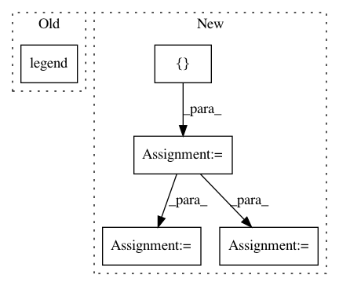

e8b2e17f4eec658f6a6d53486dbbe3eac48bb0fa,pyinterpret/core/global_interpretation/partial_dependence.py,PartialDependence,_plot_2d_1_binary_feature_and_1_continuous,#PartialDependence#Any#Any#Any#Any#Any#Any#,650
Before Change
ax.set_ylabel(feature2)
ax.set_zlabel("Predicted {}".format(class_name))
handles, labels = ax.get_legend_handles_labels()
ax.legend(handles, labels)
return flatten([figure_list, axis_list])
def partial_dependency_sklearn(self):
After Change
ax = f.add_subplot(111)
figure_list.append(f)
axis_list.append(ax)
plot_data = pdp.set_index([non_binary_feature, binary_feature])[mean_col]\
.unstack()
sd = pdp.set_index([non_binary_feature, binary_feature])[sd_col]\
.unstack()
plot_data.plot(ax=ax,color=COLORS)
if with_variance:
non_binary_values = plot_data.index.values
binary_values = plot_data.columns.values
upper_plane = plot_data + sd
lower_plane = plot_data - sd
for binary_value in binary_values:
color = next(colors)
ax.fill_between(non_binary_values, lower_plane[binary_value].values, upper_plane[binary_value].values, alpha=.2,
color=color)
In pattern: SUPERPATTERN
Frequency: 3
Non-data size: 5
Instances
Project Name: datascienceinc/Skater
Commit Name: e8b2e17f4eec658f6a6d53486dbbe3eac48bb0fa
Time: 2017-03-30
Author: aikramer2@gmail.com
File Name: pyinterpret/core/global_interpretation/partial_dependence.py
Class Name: PartialDependence
Method Name: _plot_2d_1_binary_feature_and_1_continuous
Project Name: datascienceinc/Skater
Commit Name: e8b2e17f4eec658f6a6d53486dbbe3eac48bb0fa
Time: 2017-03-30
Author: aikramer2@gmail.com
File Name: pyinterpret/core/global_interpretation/partial_dependence.py
Class Name: PartialDependence
Method Name: _plot_2d_2_binary_feature
Project Name: freelunchtheorem/Conditional_Density_Estimation
Commit Name: 60a3f7d496800f41c6a1cff4cc1adfdfc0eb042c
Time: 2019-07-08
Author: jonas.rothfuss@gmx.de
File Name: cde/evaluation/simulation_eval/plotting/question7_plots.py
Class Name:
Method Name: